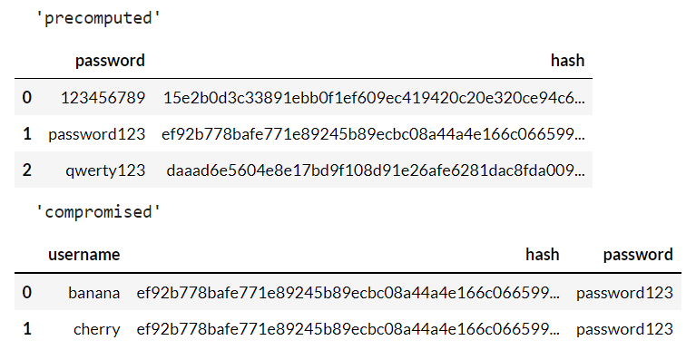

A hash can be described a simple data structure that stores key-value pairs. This article will focus on hash security - how hashes can be used in cryptography. Hashing is a bit like the Enigma machine in WWII. It uses a complicated algorithm to encode text into an about 30 character code. Computers can then read a hash to find out what a password was. However, the hash for encoded text is always the same. For example, the hash for password123 is always 42f749ade7f9e195bf475f37a44cafcb no matter what. Because of this, hackers can make a database called a Rainbow Table that stores common passwords and keys. So, if a hacker finds a hash and plugs it into a rainbow table, they may have a chance of getting the password.
An example of a rainbow table
Salts are what can make hashes more powerful by adding a second security measure. A salt is a string of characters added before a password before it gets hashed, for example 1g59(in reality, salts are usually longer than this - usually over 48 bits.) This changes the whole hash of the password, rendering rainbow tables mostly useless. However, since the salt is typically stored in a computers data, a hacker still might be able to find the salt and get the password. That being said, a salted hash is typically secure, or at least secure enough to encrypt basic passwords.

A diagram showing how a computer salts and hashes, as well as the data it stores
Now that we know what hashes and salts are, the question comes: Are salted hashes secure? It depends on how
secure a program needs to be. For most functions(i.e. your password to common websites, your google account),
salted hashes are sufficient. For a hacker to find your password from these hashes,
1] The hacker would need an
extremely powerful computer
2] The hacker would need an extensive amount of time and
3] The password would need to
be relatively insecure.
With that being said, however, important sections such as bank accounts often use other security
or additional layers of security to protect passwords because of the stakes that come if the password gets cracked.

Thanks for reading this article! I hope you enjoyed.
Back to main page